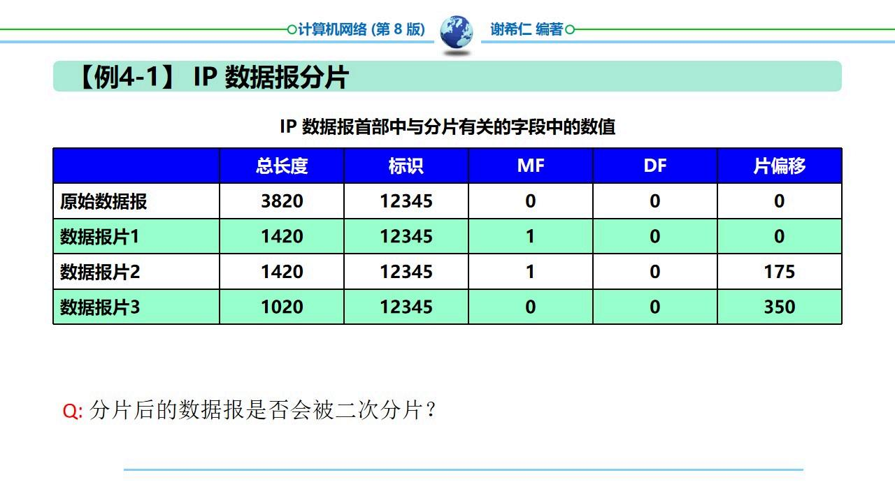
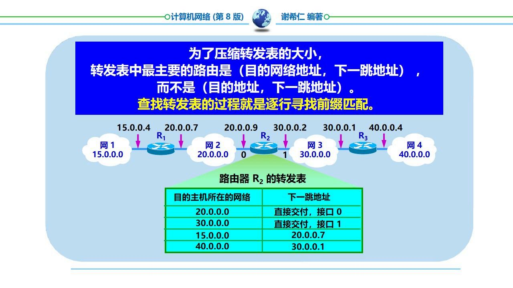
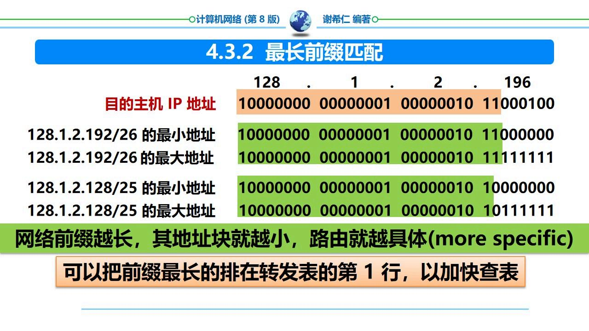
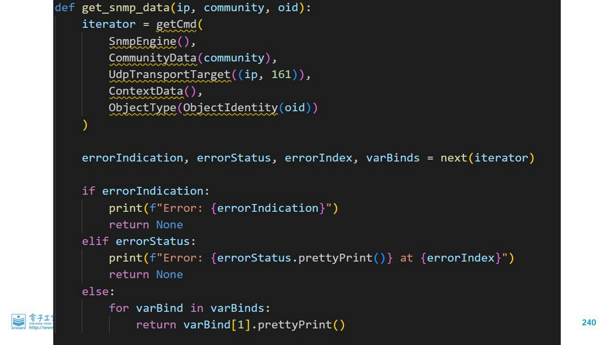

本章核心问题：如何在一段链路上实现可靠、透明的帧传输？
数据链路层——在物理层提供的比特流服务基础上，将网络层的数据报封装成帧，并在一段链路上进行可靠传输。
主要功能：封装成帧、透明传输、差错检测。

是什么？在一段数据的前后分别添加首部和尾部，构成一个帧。首部和尾部的作用是帧定界。
帧结构：帧首部 + 数据部分 + 帧尾部
帧定界符：SOH (Start Of Header) 标志帧开始，EOT (End Of Transmission) 标志帧结束。

问题：如果数据中的某个字节恰好与帧定界符（如 SOH 或 EOT）相同，接收端会错误地判断帧的边界。
解决：字节填充（字符填充）——在数据部分中出现的控制字符前面插入转义字符 ESC。
接收端遇到 ESC 就从帧中删除它，将后面的字符视为数据。

易错：「透明」的意思是对上层的数据没有限制——上层可以传送任意二进制数据，链路层都能正确传输，不会因为某些字节碰巧等于控制字符而出错。
是什么？检测帧在传输过程中是否出现了比特差错。
CRC（循环冗余检验）——最常用的检错方法。
原理：发送端将数据比特序列除以一个生成多项式 $P(x)$，余数作为帧检验序列 FCS 附加在数据后面。接收端用同样的 $P(x)$ 去除，余数为 0 则无差错。
CRC 只能检测比特差错，不能纠正，也不能保证可靠传输（不处理帧丢失/重复/失序）。
易错：CRC 检错无比特差错 ≠ 可靠传输。可靠传输还需要处理帧丢失、帧重复、帧失序等问题。
CSMA/CD (载波监听多点接入/碰撞检测)——以太网使用的共享信道协议，解决在广播信道上如何协调多个站点发送数据的问题。

争用期（碰撞窗口）：以太网的端到端往返时间 $2\\tau$。如果在这个时间内没有检测到碰撞，则这次发送就不会再发生碰撞。
最短有效帧长 = 争用期 × 数据率。10Mbps 以太网的最短帧长为 512 bit = 64 字节。
如果帧太短（< 64 字节），可能在碰撞被检测到之前已经发完，导致发送方不知道发生了碰撞。因此最短帧长必须足够长。
易错：争用期 = 2τ（往返时间），不是 τ（单程）。最短帧长 = 争用期 × 数据率，不是 τ × 数据率。
MAC 地址（硬件地址/物理地址）——48 位（6 字节），固化在网卡的 ROM 中。全球唯一。
MAC 帧格式（以太网 V2）：
| 字段 | 字节数 | 说明 |
|---|---|---|
| 前同步码 | 8 | 7字节前同步码 + 1字节帧开始定界符 |
| 目的 MAC | 6 | 接收方的 MAC 地址 |
| 源 MAC | 6 | 发送方的 MAC 地址 |
| 类型 | 2 | 上层协议类型（如 0x0800 为 IPv4） |
| 数据 | 46~1500 | IP 数据报 |
| FCS | 4 | 帧检验序列（CRC） |
有效帧长：64~1518 字节（不含前同步码）。
交换机——工作在数据链路层，根据 MAC 地址转发帧。通过自学习建立转发表（MAC 地址 → 端口映射）。
VLAN（虚拟局域网）——在物理网络上划分逻辑工作组，每个 VLAN 是独立的广播域。IEEE 802.1Q 标准定义了 VLAN 标签格式。
VLAN 优点：限制广播风暴、提高安全性、灵活管理。